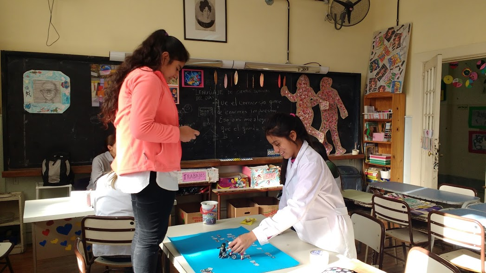
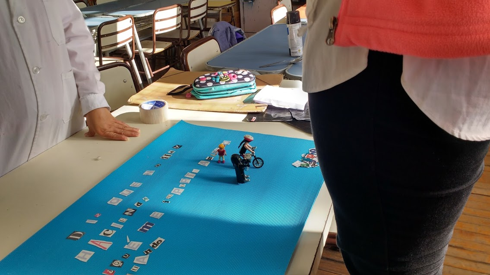
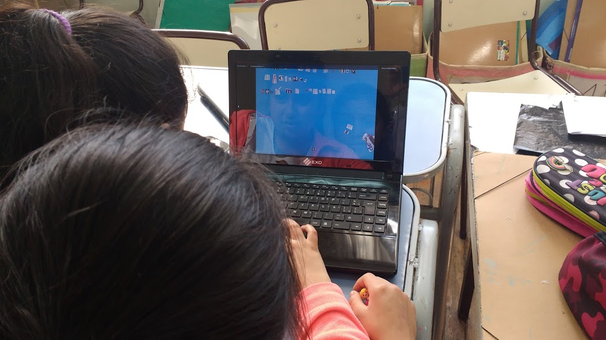

Usando nuestros propios celulares, desarrollamos un corto en la técnica de stop motion.
Adquirir conocimientos específicos sobre la técnica de stop motion.
Comprender elementos del lenguaje (encuadre, luz) y narrativa audiovisuales.
La actividad fue desarrollada tanto en nivel primario como en nivel medio. Primero, diseñamos los story board de nuestros futuros cortometrajes. Después, armamos nuestra escenografía y personajes y, finalmente tomamos las fotografías con nuestros celulares. Algunos pudimos armar trípodes de cartón, otros intentamos transformarnos en estatuas durante unos minutos... Por último, trabajamos en la edición de las tomas para construir nuestro video utilizando la app Pic Pac y el programa Windows Movie Maker.
  Vimos algunas obras de intervencion del espacio publico como Space Invaders blabla